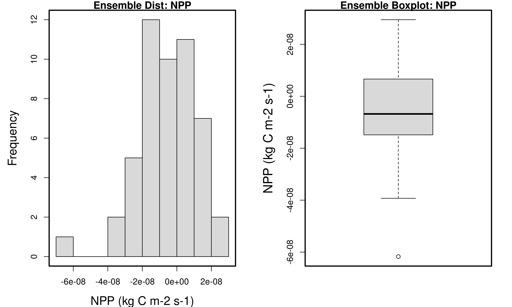
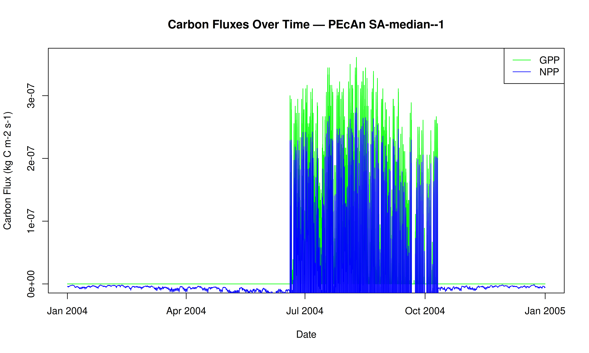
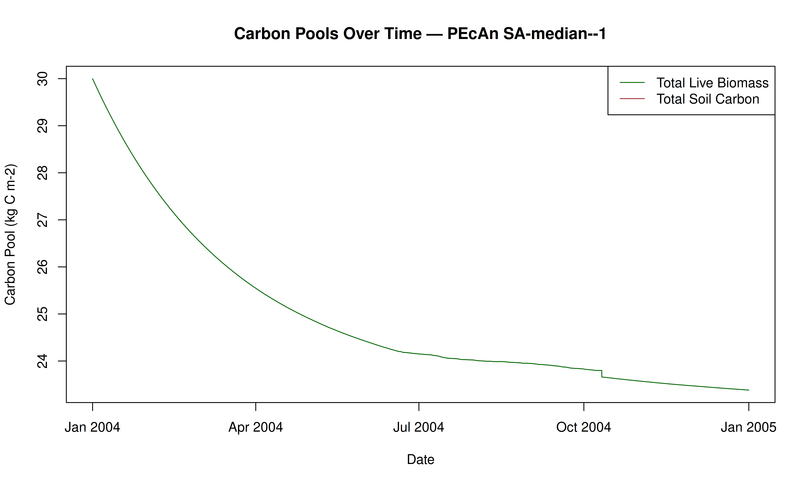
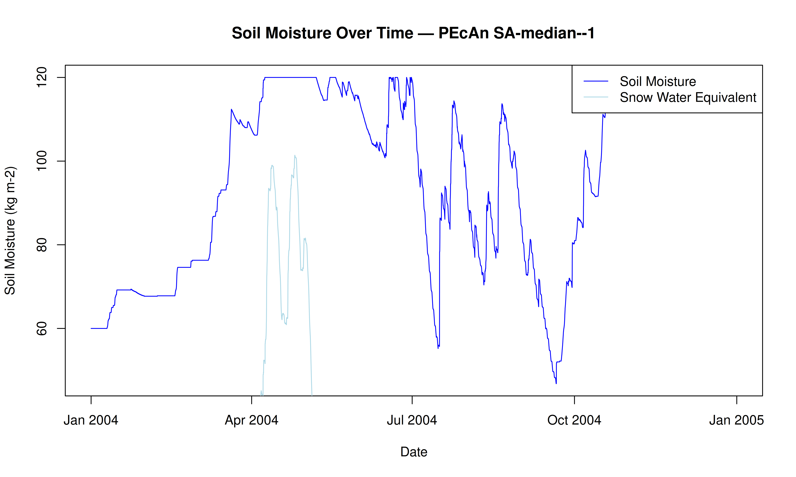
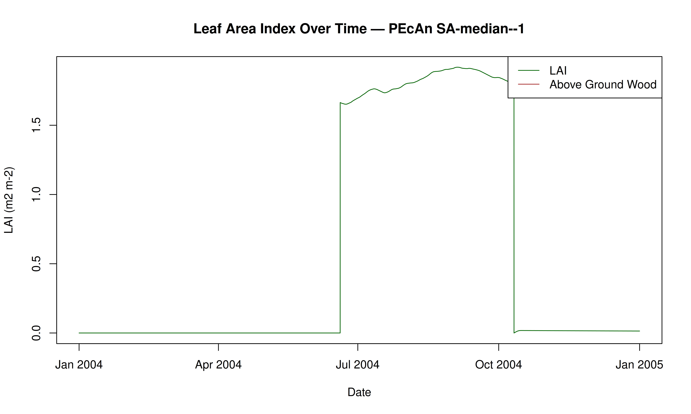

# Download and install SIPNET v1.3.0
source(
here::here(
"documentation/tutorials/Demo_1_Basic_Run/download_sipnet.R"
)
)Uncertainty Analysis Using PEcAn
1 Introduction
In Demo 2 we will be looking at how PEcAn can use information about parameter uncertainty to perform three automated analyses:
- Ensemble Analysis: Repeat numerous model runs, each sampling from the parameter uncertainty, to generate a probability distribution of model projections. Allows us to put a confidence interval on the model.
- Sensitivity Analysis: Repeats numerous model runs to assess how changes in model parameters will affect model outputs. Allows us to identify which parameters the model is most sensitive to.
- Uncertainty Analysis: Combines information about model sensitivity with information about parameter uncertainty to determine the contribution of each model parameter to the uncertainty in model outputs. Allow us to identify which parameters are driving model uncertainty.
This demo shows how to run an uncertainty analysis workflow in PEcAn using an R-based Quarto notebook. It covers loading settings, configuring models, running simulations, and performing ensemble and sensitivity analyses to assess uncertainty and parameter importance. This programmatic approach complements the web-based PEcAn interface.
Context & modeling scenario:
We simulate plant and ecosystem carbon balance (Net Primary Productivity and Net Ecosystem Exchange) at the AmeriFlux Niwot Ridge Forest site (US‑NR1) during the year 2004. We use SIPNET parameterized as a temperate conifer PFT and driven by AmeriFlux meteorology following the analysis in Moore et al. (2007). This notebook also provides a compact template that can be extended to more years, locations, and PFTs.
What this notebook does:
- Configure a PEcAn workflow by loading and validating a
pecan.xmlsettings file. - Run a set of ecosystem model simulations by writing model configuration files and then running SIPNET.
- Quantify uncertainty using ensemble analysis, sensitivity analyses, and variance decomposition.
- Visualize results to identify important parameters and how they influence model variance.
- Change configuration settings and re-run the workflow.
1.1 Prerequisites
To run this notebook, you will need to install PEcAn and its dependencies, as well as download the SIPNET model binary.
1.1.1 PEcAn packages and dependencies.
# Enable repository from pecanproject
options(repos = c(
pecanproject = 'https://pecanproject.r-universe.dev',
CRAN = 'https://cloud.r-project.org'))
install.packages(c('PEcAn.all', 'PEcAn.SIPNET'))A valid pecan.xml configuration file. Start with the example at pecan/documentation/tutorials/Demo_02_Uncertainty_Analysis/pecan.xml.
1.1.2 SIPNET v1.3.0
If you haven’t already installed the SIPNET model, you can do so by running the following code. This will download the SIPNET binary to demo_outdir/sipnet and make it executable.
Note: The
demo_outdirdirectory will be created inside of your PEcAn installation, atdocumentation/tutorials/Demo_02_Uncertainty_Analysis/demo_outdir/. This directory will contain the SIPNET binary as well as the output generated by PEcAn in this demo.
Note: You can find the most recent version of the SIPNET binary at: SIPNET GitHub Releases, but this notebook is designed to work with SIPNET v1.3.0.
2 Load PEcAn Packages
First, we need to load the PEcAn R packages. These packages provide all the functions we’ll use to run the workflow.
# Load the PEcAn.all package, which includes all necessary PEcAn functionality
library("PEcAn.all")Loading required package: PEcAn.DBLoading required package: PEcAn.settingsLoading required package: PEcAn.MALoading required package: PEcAn.loggerLoading required package: PEcAn.utilsLoading required package: PEcAn.uncertaintyLoading required package: PEcAn.data.atmosphereLoading required package: PEcAn.data.landLoading required package: PEcAn.data.remoteLoading required package: PEcAn.assim.batchLoading required package: PEcAn.emulatorLoading required package: PEcAn.priorsLoading required package: PEcAn.benchmarkLoading required package: PEcAn.remoteLoading required package: PEcAn.workflow3 Load PEcAn Settings File
Use the XML settings file (pecan.xml) exactly as in the Demo 1 Basic Run tutorial. See the “Load PEcAn Settings File” section of Demo 1 for a more detailed walkthrough of fields and schema. In this tutorial we focus on settings relevant to this notebook and explain the additional options associated with uncertainty analysis.
3.1 Settings
Example settings for this demo live at pecan/documentation/tutorials/Demo_02_Uncertainty_Analysis/pecan.xml and you can read more about the settings in the PEcAn Documentation, and sections focused on ensemble and sensitivity analysis settings in particular.
Open that settings file and look at the ensemble and sensitivity analysis sections. You can modify these settings to change the number of ensemble members, the variable to analyze, and the sampling method. Some of the key settings in this demo include:
Ensemble size
The number of runs in the ensemble is set to 50 in this demo, but a larger ensemble size (100-5000) is often used in practice to better estimate the posterior distribution of the output.
Output variable
The output variable for the ensemble analysis is set to NPP (Net Primary Productivity). You can change this to other variables like NEE (Net Ecosystem Exchange), LAI (Leaf Area Index), ET (Evapotranspiration), etc. You can also specify multiple variables by providing a vector of variable names (e.g., c("NPP", "NEE", "LAI")) to analyze uncertainty across several ecosystem processes simultaneously.
Sampling method
The sampling method for generating parameter sets is set to halton in this demo. This tells PEcAn to sample using the Halton sequence, which is a quasi-random sampling method that more efficiently explores parameter space than random sampling. Other options include Latin Hypercube (lhc), which is another quasi-random sequence, as well as uniform that draws random samples. A random sampler requires a larger ensemble size to adequately explore parameter space.
Sensitivity analysis quantiles
PEcAn’s sensitivity analysis includes a handy shortcut that converts a specified standard deviation into its normal quantile equivalent. In the example pecan.xml, these are set to -1, 1 (the median value, 0, occurs by default) which are converted internally to the 15.9th and 84.1th quantiles of the parameter distribution. You can add more quantiles to explore a wider range of parameter values: {-3, -2, -1, 1, 2, 3} is often used in practice.
By working in quantiles relative to each parameter’s distribution, the sensitivity and variance decomposition reflect sensitivity across the range of parameter values. Many sensitivity analyses tools use a fixed perturbation size such as the mean +/- 10%. PEcAn’s SA does not take this approach because it does not capture the uncertainty across the parameter distribution and can not be used for variance decomposition.
3.2 Load the settings file
settings_path <- here::here("documentation/tutorials/Demo_02_Uncertainty_Analysis/pecan.xml")
settings <- PEcAn.settings::read.settings(settings_path)
settings <- PEcAn.settings::prepare.settings(settings)See Demo 1 Section 6 for details on what these functions do. Briefly, they read the XML file, convert it into an R list object that PEcAn can use, check that settings are valid, fill in defaults, and create the output directory.
4 Write Model Configuration Files
This step generates the model-specific configuration files that will be used to run the ecosystem model. The process involves:
- Generating SIPNET configuration files using the
runModule.run.write.configs()function.
settings <- PEcAn.workflow::runModule.run.write.configs(settings)Error in postgresqlNewConnection(drv, ...) :
RPosgreSQL error: could not connect root@/var/run/postgresql:5432 on dbname "root": connection to server on socket "/var/run/postgresql/.s.PGSQL.5432" failed: No such file or directory
Is the server running locally and accepting connections on that socket?Loading required package: PEcAn.SIPNET5 Run Model Simulations
This section executes the SIPNET simulations and retrieves the results.
It uses the function runModule_start_model_runs(settings) to initiate the model runs using the configuration files generated in the previous step.
PEcAn.workflow::runModule_start_model_runs(settings)
|
| | 0%
|
|= | 1%
|
|== | 2%
|
|== | 3%
|
|=== | 4%
|
|==== | 6%
|
|===== | 7%
|
|====== | 8%
|
|====== | 9%
|
|======= | 10%
|
|======== | 11%
|
|========= | 12%
|
|========= | 13%
|
|========== | 15%
|
|=========== | 16%
|
|============ | 17%
|
|============= | 18%
|
|============= | 19%
|
|============== | 20%
|
|=============== | 21%
|
|================ | 22%
|
|================= | 24%
|
|================= | 25%
|
|================== | 26%
|
|=================== | 27%
|
|==================== | 28%
|
|==================== | 29%
|
|===================== | 30%
|
|====================== | 31%
|
|======================= | 33%
|
|======================== | 34%
|
|======================== | 35%
|
|========================= | 36%
|
|========================== | 37%
|
|=========================== | 38%
|
|============================ | 39%
|
|============================ | 40%
|
|============================= | 42%
|
|============================== | 43%
|
|=============================== | 44%
|
|=============================== | 45%
|
|================================ | 46%
|
|================================= | 47%
|
|================================== | 48%
|
|=================================== | 49%
|
|=================================== | 51%
|
|==================================== | 52%
|
|===================================== | 53%
|
|====================================== | 54%
|
|======================================= | 55%
|
|======================================= | 56%
|
|======================================== | 57%
|
|========================================= | 58%
|
|========================================== | 60%
|
|========================================== | 61%
|
|=========================================== | 62%
|
|============================================ | 63%
|
|============================================= | 64%
|
|============================================== | 65%
|
|============================================== | 66%
|
|=============================================== | 67%
|
|================================================ | 69%
|
|================================================= | 70%
|
|================================================== | 71%
|
|================================================== | 72%
|
|=================================================== | 73%
|
|==================================================== | 74%
|
|===================================================== | 75%
|
|===================================================== | 76%
|
|====================================================== | 78%
|
|======================================================= | 79%
|
|======================================================== | 80%
|
|========================================================= | 81%
|
|========================================================= | 82%
|
|========================================================== | 83%
|
|=========================================================== | 84%
|
|============================================================ | 85%
|
|============================================================= | 87%
|
|============================================================= | 88%
|
|============================================================== | 89%
|
|=============================================================== | 90%
|
|================================================================ | 91%
|
|================================================================ | 92%
|
|================================================================= | 93%
|
|================================================================== | 94%
|
|=================================================================== | 96%
|
|==================================================================== | 97%
|
|==================================================================== | 98%
|
|===================================================================== | 99%
|
|======================================================================| 100%The PEcAn workflow will take a longer time to complete than in Demo 1 because we have just asked for over a hundred model runs. Once the runs are complete we will continue.
6 Fetch Model Outputs
Next we convert all of the model output from the previous run to a standard format that PEcAn can use for analysis. This is done using the runModule.get.results() function.
runModule.get.results(settings)7 Ensemble and Sensitivity Analysis
Next, we use the outputs from the previous step to perform ensemble and sensitivity analyses.
Ensemble Analysis: Quantifies uncertainty in model predictions by running multiple simulations with parameters sampled from their uncertainty distributions. This generates probability distributions of model outputs and confidence intervals.
runModule.run.ensemble.analysis(settings)[1] "----- Variable: NPP"
[1] "----- Running ensemble analysis for site: Niwot Ridge Forest/LTER NWT1 (US-NR1)"[1] "----- Done!"
[1] " "
[1] "-----------------------------------------------"
[1] " "
[1] " "Sensitivity Analysis: Systematically varies individual parameters to assess their influence on model outputs. This identifies which parameters most strongly affect model predictions and helps prioritize parameter refinement efforts.
runModule.run.sensitivity.analysis(settings)$coef.vars
growth_resp_factor leaf_turnover_rate
0.52314023 0.88169612
root_respiration_rate root_turnover_rate
0.57750504 0.57760373
Amax leaf_respiration_rate_m2
0.57764863 0.55600452
SLA leafC
0.80223473 0.02607590
Vm_low_temp AmaxFrac
0.01097613 0.11546966
psnTOpt stem_respiration_rate
0.03417927 0.57838935
extinction_coefficient half_saturation_PAR
0.13855053 0.42885852
dVPDSlope dVpdExp
0.53356551 0.28896893
veg_respiration_Q10 fine_root_respiration_Q10
0.17324390 0.32501552
coarse_root_respiration_Q10
0.32534666
$elasticities
growth_resp_factor leaf_turnover_rate
0.00000000 0.02320464
root_respiration_rate root_turnover_rate
-0.02508999 0.05192989
Amax leaf_respiration_rate_m2
2.83476962 -2.06513816
SLA leafC
0.81446798 0.15306831
Vm_low_temp AmaxFrac
1.01795920 2.48502840
psnTOpt stem_respiration_rate
1.01055079 -1.43854509
extinction_coefficient half_saturation_PAR
-0.57229325 -1.28681308
dVPDSlope dVpdExp
-0.18295933 0.09271587
veg_respiration_Q10 fine_root_respiration_Q10
6.50084187 0.08360650
coarse_root_respiration_Q10
-0.23722866
$sensitivities
growth_resp_factor leaf_turnover_rate
0.000000e+00 9.970835e-11
root_respiration_rate root_turnover_rate
-2.359663e-12 4.884707e-11
Amax leaf_respiration_rate_m2
6.666635e-10 -1.944744e-09
SLA leafC
2.732070e-10 1.422201e-11
Vm_low_temp AmaxFrac
-9.748919e-10 1.557956e-08
psnTOpt stem_respiration_rate
2.423273e-10 -1.355162e-10
extinction_coefficient half_saturation_PAR
-5.381744e-09 -3.907003e-10
dVPDSlope dVpdExp
-6.624579e-09 2.181281e-10
veg_respiration_Q10 fine_root_respiration_Q10
1.528495e-08 1.229585e-10
coarse_root_respiration_Q10
-3.491744e-10
$variances
growth_resp_factor leaf_turnover_rate
5.983871e-50 1.785332e-20
root_respiration_rate root_turnover_rate
4.672753e-21 2.193432e-20
Amax leaf_respiration_rate_m2
6.122857e-17 2.785313e-17
SLA leafC
1.096593e-17 3.746338e-22
Vm_low_temp AmaxFrac
8.542850e-18 1.822057e-18
psnTOpt stem_respiration_rate
5.995813e-18 1.530077e-17
extinction_coefficient half_saturation_PAR
1.389601e-19 6.768366e-18
dVPDSlope dVpdExp
2.123853e-19 1.622220e-20
veg_respiration_Q10 fine_root_respiration_Q10
2.851950e-17 1.785504e-20
coarse_root_respiration_Q10
1.316744e-19
$partial.variances
growth_resp_factor leaf_turnover_rate
3.571204e-34 1.065495e-04
root_respiration_rate root_turnover_rate
2.788722e-05 1.309051e-04
Amax leaf_respiration_rate_m2
3.654152e-01 1.662288e-01
SLA leafC
6.544522e-02 2.235833e-06
Vm_low_temp AmaxFrac
5.098415e-02 1.087413e-02
psnTOpt stem_respiration_rate
3.578331e-02 9.131574e-02
extinction_coefficient half_saturation_PAR
8.293210e-04 4.039395e-02
dVPDSlope dVpdExp
1.267526e-03 9.681491e-05
veg_respiration_Q10 fine_root_respiration_Q10
1.702058e-01 1.065597e-04
coarse_root_respiration_Q10
7.858395e-04
growth_resp_factor leaf_turnover_rate root_respiration_rate
15.866 4.701256e-09 4.449915e-09 4.793975e-09
50 4.701256e-09 4.701256e-09 4.701256e-09
84.134 4.701256e-09 4.739615e-09 4.632887e-09
root_turnover_rate Amax leaf_respiration_rate_m2 SLA
15.866 4.437930e-09 -7.392576e-09 9.995320e-09 7.454526e-10
50 4.701256e-09 4.701256e-09 4.701256e-09 4.701256e-09
84.134 4.771365e-09 1.080759e-08 -8.726093e-10 4.574289e-10
leafC Vm_low_temp AmaxFrac psnTOpt
15.866 4.689967e-09 6.977459e-09 3.003852e-09 -5.232746e-09
50 4.701256e-09 4.701256e-09 4.701256e-09 4.701256e-09
84.134 4.727503e-09 1.776842e-09 6.194027e-09 7.597368e-09
stem_respiration_rate extinction_coefficient half_saturation_PAR
15.866 9.335914e-09 5.145403e-09 8.187772e-09
50 4.701256e-09 4.701256e-09 4.701256e-09
84.134 8.203046e-11 4.264066e-09 2.050097e-09
dVPDSlope dVpdExp veg_respiration_Q10 fine_root_respiration_Q10
15.866 5.155744e-09 4.511517e-09 -3.046701e-09 4.466264e-09
50 4.701256e-09 4.701256e-09 4.701256e-09 4.701256e-09
84.134 4.070785e-09 4.809312e-09 9.472557e-09 4.768234e-09
coarse_root_respiration_Q10
15.866 5.142842e-09
50 4.701256e-09
84.134 4.284874e-098 PEcAn Outputs
8.1 Output Directory Structure
These are the key folders and files that will be created under the directory defined by settings$outdir (e.g., demo_outdir in the example). The file contents are described in the next section.
We discussed the output directory in Demo 1 (Basic Run), but now we have three new folders that contain outputs from the sensitivity, ensemble, and variance decomposition analyses. Here we focus on the additional outputs generated by the ensemble and sensitivity analyses.
demo_outdir/
├── run/ # Configuration & execution metadata
│ ├── runs.txt # List of run IDs (SA and ensemble runs)
│ ├── ENS-*-*/ # Ensemble run directories (e.g., ENS-00001--1/)
│ └── SA-*-*/ # Sensitivity analysis run directories
├── out/ # Raw model outputs by run ID
│ └── <runid>/ # E.g., daily or sub-daily SIPNET output files
├── ensemble.analysis.*.pdf # Ensemble analysis plots
├── ensemble.output.*.Rdata # Raw ensemble outputs
├── ensemble.samples.*.Rdata # Parameter samples used for ensemble
├── ensemble.ts.*.Rdata # Time series data from ensemble
├── samples.Rdata # Parameter samples for both SA and ensemble
├── sensitivity.output.*.Rdata # SA model outputs
├── sensitivity.results.*.Rdata # Processed SA results
├── sensitivity.samples.*.Rdata # SA parameter samples
├── variance.decomposition.*.pdf # Variance decomposition analysis
├── pft/ # Parameter (prior/posterior) files per PFT
│ └── temperate.coniferous/
└── sipnet # SIPNET binary (downloaded earlier)8.1.1 Model outputs and logs
- Standardized netCDF files (
[year].nc) for analysis and visualization - Raw model output (for SIPNET, e.g.,
sipnet.outper run) logfile.txtwith model and workflow messages- Note:
pft/contains parameter files used in estimation; see the parameter-estimation tutorial (Demo 3) for details
9 Understanding PEcAn Uncertainty Analysis Outputs
After running ensemble and sensitivity analyses, PEcAn generates several important outputs that help you understand model uncertainty and parameter sensitivity.
The samples.Rdata file contains the parameter values used in the sensitivity and ensemble runs. It stores two objects, sa.samples and ensemble.samples, which are the parameter values for the sensitivity analysis and ensemble runs, respectively.
9.1 Ensemble Analysis Outputs
The ensemble analysis produces:
ensemble.Rdata: Containsensemble.outputobject with model predictions for all ensemble membersensemble.analysis.[RunID].[Variable].[StartYear].[EndYear].pdf: Histogram and boxplot of ensemble predictionsensemble.ts.[RunID].[Variable].[StartYear].[EndYear].pdf: Time-series plot showing ensemble mean, median, and 95% confidence intervals
9.2 Sensitivity Analysis Outputs
The sensitivity analysis generates:
sensitivity.analysis.[RunID].[Variable].[StartYear].[EndYear].pdf: Raw data points from univariate analyses with spline fits.sensitivity.output.[RunID].[Variable].[StartYear].[EndYear].Rdata: Model outputs corresponding to parameter variations.sensitivity.analysis.[RunID].[Variable].[StartYear].[EndYear].pdfshows the raw data points from univariate one-at-a-time analyses and spline fits through the points. Open this file to determine which parameters are most and least sensitive.
9.3 Variance Decomposition Outputs
The variance decomposition produces:
variance.decomposition.[RunID].[Variable].[StartYear].[EndYear].pdf: Three-column analysis showing:- Coefficient of variation (normalized posterior variance)
- Elasticity (normalized sensitivity)
- Partial standard deviation of each parameter
9.4 Interpreting the Results
Variance Decomposition Analysis:
- Parameters are sorted by their contribution to model output uncertainty (the right column).
- Identify parameters that are:
- Highly sensitive but low uncertainty.
- Highly uncertain but low sensitivity.
- Both sensitive and uncertain.
- Identify parameters that are both sensitive and uncertain for future constraint with data or expert knowledge.
- Potential gotchas:
- Flat sensitivity curves: check that parameter values were correctly generated and read by the model.
- Parameters with high uncertainty: consider revising priors.
- Multi-modal or otherwise unexpected parameter distributions: check that parameter was specified correctly.
Choose the parameter that you think provides the most efficient means of reducing model uncertainty and propose how you might best reduce uncertainty in this process. In making this choice remember that not all processes in models can be directly observed, and that the cost-per-sample for different measurements can vary tremendously (and thus the parameter you measure next is not always the one contributing the most to model variability). Also consider the role of parameter uncertainty versus model sensitivity in justifying your choice of what parameters to constrain.
10 Visualize Uncertainty Analysis Results
This section loads the results from the uncertainty analyses and generates plots directly in the notebook. This provides an immediate view of the ensemble time series, sensitivity plots, and variance decomposition.
10.1 Ensemble Analysis Visualization
Here we visualize the results of the ensemble analysis. It shows the overall distribution of the model output and how the output and its uncertainty change over time.
This section reproduces the plots saved in the ensemble.analysis/ folder in order to show the user how to access and visualize the results programmatically so that they can further investigate output and customize plots.
# --- 1. Define Helper Variables ---
# Extract key variables from the settings object to simplify file path construction
# and plotting. This makes the code cleaner and easier to read.
variable <- settings$ensemble$variable
pft <- settings$pfts[[1]]
start.year <- lubridate::year(settings$run$start.date)
end.year <- lubridate::year(settings$run$end.date)
ensemble.id <- if (!is.null(settings$ensemble$id)) settings$ensemble$id else "NOENSEMBLEID"
# --- 2. Load and Plot Ensemble Output Distribution ---
# This section visualizes the distribution of the ensemble model runs.
# It generates a histogram and a boxplot to show the central tendency, spread,
# and shape of the output variable's distribution.
# Construct the path to the ensemble output file
ens_file <- PEcAn.uncertainty::ensemble.filename(
settings,
prefix = "ensemble.output",
ensemble.id = ensemble.id,
variable = variable,
start.year = start.year,
end.year = end.year
)
# Check if the file exists, then load and plot the data
if (file.exists(ens_file)) {
ens_env <- new.env()
load(ens_file, envir = ens_env)
ens_data <- as.numeric(unlist(ens_env$ensemble.output))
# Define units for plot labels
units <- paste0(variable, " (", PEcAn.utils::mstmipvar(variable, silent = TRUE)$units, ")")
# Create side-by-side histogram and boxplot
par(mfrow = c(1, 2), mar = c(4, 4.8, 1, 2))
hist(ens_data, xlab = units, main = "Ensemble Distribution", cex.lab = 1.4, col = "grey85")
box(lwd = 2.2)
boxplot(ens_data, ylab = units, main = "Ensemble Boxplot", col = "grey85", cex.lab = 1.5)
box(lwd = 2.2)
par(mfrow = c(1, 1))
} else {
PEcAn.logger::logger.warn("Could not find ensemble output file:", ens_file)
}
# --- 3. Plot Ensemble Time Series ---
# This section visualizes the ensemble results over time, showing the mean,
# median, and 95% confidence interval of the model output.
ens_ts_data <- PEcAn.uncertainty::read.ensemble.ts(settings, variable = variable)[1] "----- Variable: NPP"
[1] "----- Reading ensemble output ------"
[1] "ENS-00001--1"
[1] "ENS-00002--1"
[1] "ENS-00003--1"
[1] "ENS-00004--1"
[1] "ENS-00005--1"
[1] "ENS-00006--1"
[1] "ENS-00007--1"
[1] "ENS-00008--1"
[1] "ENS-00009--1"
[1] "ENS-00010--1"
[1] "ENS-00011--1"
[1] "ENS-00012--1"
[1] "ENS-00013--1"
[1] "ENS-00014--1"
[1] "ENS-00015--1"
[1] "ENS-00016--1"
[1] "ENS-00017--1"
[1] "ENS-00018--1"
[1] "ENS-00019--1"
[1] "ENS-00020--1"
[1] "ENS-00021--1"
[1] "ENS-00022--1"
[1] "ENS-00023--1"
[1] "ENS-00024--1"
[1] "ENS-00025--1"
[1] "ENS-00026--1"
[1] "ENS-00027--1"
[1] "ENS-00028--1"
[1] "ENS-00029--1"
[1] "ENS-00030--1"
[1] "ENS-00031--1"
[1] "ENS-00032--1"
[1] "ENS-00033--1"
[1] "ENS-00034--1"
[1] "ENS-00035--1"
[1] "ENS-00036--1"
[1] "ENS-00037--1"
[1] "ENS-00038--1"
[1] "ENS-00039--1"
[1] "ENS-00040--1"
[1] "ENS-00041--1"
[1] "ENS-00042--1"
[1] "ENS-00043--1"
[1] "ENS-00044--1"
[1] "ENS-00045--1"
[1] "ENS-00046--1"
[1] "ENS-00047--1"
[1] "ENS-00048--1"
[1] "ENS-00049--1"
[1] "ENS-00050--1"if (!is.null(ens_ts_data)) {
PEcAn.uncertainty::ensemble.ts(ens_ts_data)
}[1] "------ Generating ensemble time-series plot ------"
10.2 Sensitivity and Variance Decomposition Visualization
This block visualizes the results of the sensitivity analysis. The plots show how sensitive the model output is to changes in each parameter and which parameters contribute most to the overall uncertainty.
# --- 1. Load Sensitivity Analysis Results ---
# This section loads the saved sensitivity analysis data, which contains the
# outputs needed to generate the sensitivity and variance decomposition plots.
# Construct the path to the sensitivity analysis results file
sens_file <- file.path(
settings$outdir,
paste0("sensitivity.results", ".", ensemble.id, ".", variable, ".", start.year, ".", end.year, ".Rdata")
)
# Check if the file exists, then load the data and generate plots
if (file.exists(sens_file)) {
sens_env <- new.env()
load(sens_file, envir = sens_env)
sensitivity.results <- sens_env$sensitivity.results
# --- 2. Generate Sensitivity Plots ---
# These plots show how the model output changes as each parameter is varied
# one at a time, helping to identify which parameters have the strongest influence.
sa_plots <- PEcAn.uncertainty::plot_sensitivities(
sensitivity.results[[pft$name]]$sensitivity.output
)
print(do.call(gridExtra::grid.arrange, c(sa_plots, ncol = floor(sqrt(length(sa_plots))))))
# --- 3. Generate Variance Decomposition Plots ---
# These plots break down the total output variance into contributions from
# each parameter, highlighting the most important sources of uncertainty.
vd_plots <- PEcAn.uncertainty::plot_variance_decomposition(
sensitivity.results[[pft$name]]$variance.decomposition.output
)
print(do.call(gridExtra::grid.arrange, c(vd_plots, ncol = 4)))
} else {
PEcAn.logger::logger.warn("Could not find sensitivity results file:", sens_file)
}11 Customizing Ensemble Analysis Parameters (Optional)
11.1 (Optional) Use this section only if you want to override the default ensemble analysis parameters. Skip if defaults are sufficient.
Important: If you modify the ensemble analysis parameters in this section, re-run Section Section 7 and then Section Section 10 to regenerate outputs and plots.
# Set the number of ensemble members (model runs)
settings$ensemble$size <- 50
# Specify the variable(s) to be analyzed in the ensemble
# Single variable:
settings$ensemble$variable <- "NEE"
# Multiple variables (uncomment to use):
# settings$ensemble$variable <- c("NEE", "NPP", "LAI")
# Choose the method for sampling the parameter space (options: "uniform", "lhc", "halton", "sobol", "torus")
settings$ensemble$samplingspace$parameters$method <- "halton"12 Customizing Sensitivity Analysis Parameters (Optional)
12.1 (Optional) Use this section only if you want to override the default sensitivity analysis parameters. Skip if defaults are sufficient.
Important: If you modify the sensitivity analysis parameters in this section, re-run Section Section 7 and then Section Section 10 to regenerate outputs and plots.
# Set the quantiles (in standard deviations) for parameter distribution in sensitivity analysis
settings$sensitivity.analysis$quantiles$sigma <- c(-2, -1, 1, 2)
# Specify the variable to be analyzed in sensitivity analysis
settings$sensitivity.analysis$variable <- "NEE"13 Extract Model Results and Prepare for Analysis
After the model simulation completes, we need to extract the results and prepare them for analysis. This involves:
- Reading the run ID
- Setting up output paths
- Defining time period
- Loading model output
runid <- as.character(read.table(paste(settings$outdir, "/run/", "runs.txt", sep = ""))[1, 1]) # Note: if you are using an xml from a run with multiple ensembles this line will provide only the first run id
# You can change [1,1] to [10,1], [5,1], etc. to select different run IDs from runs.txt
# For example: [10,1] selects the 10th run ID, [5,1] selects the 5th run ID
outdir <- paste(settings$outdir, "/out/", runid, sep = "")
start.year <- as.numeric(lubridate::year(settings$run$start.date))
end.year <- as.numeric(lubridate::year(settings$run$end.date))
model_output <- PEcAn.utils::read.output(
runid,
outdir,
start.year,
end.year,
variables = NULL,
dataframe = TRUE,
verbose = FALSE
)
available_vars <- names(model_output)[!names(model_output) %in% c("posix", "time_bounds")]14 Display Available Model Variables
This section shows all the variables that are available in the model output. These variables represent different ecosystem processes and states that the model has simulated.
vars_df <- PEcAn.utils::standard_vars |>
dplyr::select(
Variable = Variable.Name,
Description = Long.name
) |>
dplyr::filter(Variable %in% available_vars) |>
# TODO: add year to PEcAn.utils::standard vars
dplyr::bind_rows(
dplyr::tibble(
Variable = "year",
Description = "Year"
)
)
vars_df$Description[is.na(vars_df$Description)] <- "(No description available)"
knitr::kable(vars_df, caption = "Model Output Variables and Descriptions")| Variable | Description |
|---|---|
| GPP | Gross Primary Productivity |
| NEE | Net Ecosystem Exchange |
| TotalResp | Total Respiration |
| AutoResp | Autotrophic Respiration |
| HeteroResp | Heterotrophic Respiration |
| SoilResp | Soil Respiration |
| NPP | Net Primary Productivity |
| GWBI | Gross Woody Biomass Increment |
| TotLivBiom | Total living biomass |
| AGB | Total aboveground biomass |
| LAI | Leaf Area Index |
| leaf_carbon_content | Leaf Carbon Content |
| fine_root_carbon_content | Fine Root Carbon Content |
| coarse_root_carbon_content | Coarse Root Carbon Content |
| AbvGrndWood | Above ground woody biomass |
| TotSoilCarb | Total Soil Carbon |
| litter_carbon_content | Litter Carbon Content |
| Qle | Latent heat |
| Transp | Total transpiration |
| SoilMoist | Average Layer Soil Moisture |
| SoilMoistFrac | Average Layer Fraction of Saturation |
| SWE | Snow Water Equivalent |
| litter_mass_content_of_water | Average layer litter moisture |
| year | Year |
15 Visualize Model Results
This section provides examples of how to create time series plots of different model variables. The examples cover various ecosystem processes including carbon fluxes, carbon pools, water variables, and structural variables like Leaf Area Index (LAI).
15.1 Plot Carbon Fluxes
# Plot Gross Primary Productivity (GPP) and Net Primary Productivity (NPP)
plot(model_output$posix, model_output$GPP,
type = "l",
col = "green",
xlab = "Date",
ylab = "Carbon Flux (kg C m-2 s-1)",
main = paste("Carbon Fluxes Over Time — PEcAn", runid)
)
lines(model_output$posix, model_output$NPP, col = "blue")
legend("topright", legend = c("GPP", "NPP"), col = c("green", "blue"), lty = 1)
15.2 Plot Carbon Pools
# Plot Total Live Biomass and Total Soil Carbon
plot(model_output$posix, model_output$TotLivBiom,
type = "l",
col = "darkgreen",
xlab = "Date",
ylab = "Carbon Pool (kg C m-2)",
main = paste("Carbon Pools Over Time — PEcAn", runid)
)
lines(model_output$posix, model_output$TotSoilCarb, col = "brown")
legend("topright", legend = c("Total Live Biomass", "Total Soil Carbon"), col = c("darkgreen", "brown"), lty = 1)
15.3 Plot Water Variables
# Plot Soil Moisture and Snow Water Equivalent
plot(model_output$posix, model_output$SoilMoist,
type = "l",
col = "blue",
xlab = "Date",
ylab = "Soil Moisture (kg m-2)",
main = paste("Soil Moisture Over Time — PEcAn", runid)
)
lines(model_output$posix, model_output$SWE, col = "lightblue")
legend("topright", legend = c("Soil Moisture", "Snow Water Equivalent"), col = c("blue", "lightblue"), lty = 1)
15.4 Plot LAI and Biomass
# Plot Leaf Area Index (LAI) and Above Ground Wood
plot(model_output$posix, model_output$LAI,
type = "l",
col = "darkgreen",
xlab = "Date",
ylab = "LAI (m2 m-2)",
main = paste("Leaf Area Index Over Time — PEcAn", runid)
)
lines(model_output$posix, model_output$AbvGrndWood, col = "brown")
legend("topright", legend = c("LAI", "Above Ground Wood"), col = c("darkgreen", "brown"), lty = 1)
16 Conclusion
This notebook demonstrated how to set up, run, and analyze a PEcAn ecosystem model workflow programmatically. You can now modify parameters, try different models, or extend the analysis as needed.
Try editing the pecan.xml file. Give it a new name and update the settings_path variable at the beginning of this Demo to point to the new file. See how the changes affect the model output!
17 Further Exploration
The next set of tutorials will focus on the process of data assimilation and parameter estimation. The next two steps are in “.Rmd” files which can be viewed online.
Assimilation ‘by hand’
Explore how model error changes as a function of parameter value (i.e. data assimilation ‘by hand’)
MCMC Concepts Explore Bayesian MCMC concepts using the photosynthesis module
More info about tools, analyses, and specific tasks…
Additional information about specific tasks (adding sites, models, data; software updates; etc.) and analyses (e.g. data assimilation) can be found in the PEcAn documentation
If you encounter a problem with PEcAn that’s not covered in the documentation, or if PEcAn is missing functionality you need, please search known bugs and issues, submit a bug report, or ask a question in our chat room.
18 Clean Up Workflow Output (Optional)
If you want to remove all files and directories created by this workflow and start fresh, you can run the following code. This will delete the entire output directory specified in your settings. Use with caution!
# WARNING: This will permanently delete all workflow output files!
# Uncomment the line below to enable cleanup.
# fs::dir_delete(settings$outdir)19 Session Information
19.0.1 PEcAn package versions.
PEcAn.all::pecan_version() package v1.9.0 installed source
PEcAn.all 1.9.0 1.9.0.9000 local (/pecan/bas...
PEcAn.allometry 1.7.4 1.7.4.9000 local (/pecan/mod...
PEcAn.assim.batch 1.9.0 1.9.0.9000 local (/pecan/mod...
PEcAn.BASGRA 1.8.1 1.8.1.9000 local (/pecan/mod...
PEcAn.benchmark 1.7.4 1.7.4.9000 local (/pecan/mod...
PEcAn.BIOCRO 1.7.4 1.7.5 local (/pecan/mod...
PEcAn.CABLE 1.7.4 NA NA
PEcAn.CLM45 1.7.4 1.7.4.9000 local (/pecan/mod...
PEcAn.DALEC 1.7.4 1.7.5 local (/pecan/mod...
PEcAn.data.atmosphere 1.9.0 1.9.1 local (/pecan/mod...
PEcAn.data.land 1.8.1 1.8.2 local (/pecan/mod...
PEcAn.data.mining 1.7.4 NA NA
PEcAn.data.remote 1.9.0 1.9.1 local (/pecan/mod...
PEcAn.DB 1.8.1 1.8.1.9000 local (/pecan/bas...
PEcAn.dvmdostem 1.7.4 1.7.5 local (/pecan/mod...
PEcAn.ED2 1.8.1 1.8.2 local (/pecan/mod...
PEcAn.emulator 1.8.1 1.8.1.9000 local (/pecan/mod...
PEcAn.FATES 1.8.0 1.8.1 local (/pecan/mod...
PEcAn.GDAY 1.7.4 1.7.5 local (/pecan/mod...
PEcAn.JULES 1.7.4 1.7.5 local (/pecan/mod...
PEcAn.LDNDC 1.0.1 1.0.2 local (/pecan/mod...
PEcAn.LINKAGES 1.7.4 1.7.5 local (/pecan/mod...
PEcAn.logger 1.8.3 1.8.4 local (/pecan/bas...
PEcAn.LPJGUESS 1.8.0 1.8.1 local (/pecan/mod...
PEcAn.MA 1.7.4 1.7.4.9000 local (/pecan/mod...
PEcAn.MAAT 1.7.4 1.7.5 local (/pecan/mod...
PEcAn.MAESPA 1.7.4 1.7.5 local (/pecan/mod...
PEcAn.ModelName 1.8.1 1.8.1.9000 local (/pecan/mod...
PEcAn.photosynthesis 1.7.4 1.7.4.9000 local (/pecan/mod...
PEcAn.PRELES 1.7.4 NA NA
PEcAn.priors 1.7.4 1.7.4.9000 local (/pecan/mod...
PEcAn.qaqc 1.7.4 1.7.4.9000 local (/pecan/bas...
PEcAn.remote 1.9.0 1.9.0.9000 local (/pecan/bas...
PEcAn.RothC <NA> 0.0.0.9000 local (/pecan/mod...
PEcAn.settings 1.9.0 1.9.1 local (/pecan/bas...
PEcAn.SIBCASA 0.0.2 0.0.3 local (/pecan/mod...
PEcAn.SIPNET 1.9.0 1.9.1 local (/pecan/mod...
PEcAn.STICS 1.8.1 1.8.2 local (/pecan/mod...
PEcAn.uncertainty 1.8.1 1.8.2 local (/pecan/mod...
PEcAn.utils 1.8.1 1.8.2 local (/pecan/bas...
PEcAn.visualization 1.8.1 1.8.1.9000 local (/pecan/bas...
PEcAn.workflow 1.9.0 1.9.0.9000 local (/pecan/bas...
PEcAnAssimSequential 1.9.0 1.9.0.9000 local (/pecan/mod...
PEcAnRTM 1.7.4 1.9.0.9000 local (/pecan/mod...19.0.2 R session information:
sessionInfo()R version 4.4.3 (2025-02-28)
Platform: x86_64-pc-linux-gnu
Running under: Ubuntu 24.04.2 LTS
Matrix products: default
BLAS: /usr/lib/x86_64-linux-gnu/openblas-pthread/libblas.so.3
LAPACK: /usr/lib/x86_64-linux-gnu/openblas-pthread/libopenblasp-r0.3.26.so; LAPACK version 3.12.0
locale:
[1] LC_CTYPE=en_US.UTF-8 LC_NUMERIC=C
[3] LC_TIME=en_US.UTF-8 LC_COLLATE=en_US.UTF-8
[5] LC_MONETARY=en_US.UTF-8 LC_MESSAGES=en_US.UTF-8
[7] LC_PAPER=en_US.UTF-8 LC_NAME=C
[9] LC_ADDRESS=C LC_TELEPHONE=C
[11] LC_MEASUREMENT=en_US.UTF-8 LC_IDENTIFICATION=C
time zone: Etc/UTC
tzcode source: system (glibc)
attached base packages:
[1] stats graphics grDevices utils datasets methods base
other attached packages:
[1] PEcAn.SIPNET_1.9.1 PEcAn.all_1.9.0.9000
[3] PEcAn.workflow_1.9.0.9000 PEcAn.remote_1.9.0.9000
[5] PEcAn.benchmark_1.7.4.9000 PEcAn.priors_1.7.4.9000
[7] PEcAn.emulator_1.8.1.9000 PEcAn.assim.batch_1.9.0.9000
[9] PEcAn.data.remote_1.9.1 PEcAn.data.land_1.8.2
[11] PEcAn.data.atmosphere_1.9.1 PEcAn.uncertainty_1.8.2
[13] PEcAn.utils_1.8.2 PEcAn.logger_1.8.4
[15] PEcAn.MA_1.7.4.9000 PEcAn.settings_1.9.1
[17] PEcAn.DB_1.8.1.9000
loaded via a namespace (and not attached):
[1] PEcAn.qaqc_1.7.4.9000 DBI_1.2.3
[3] gridExtra_2.3 PEcAn.allometry_1.7.4.9000
[5] rlang_1.1.5 magrittr_2.0.3
[7] furrr_0.3.1 e1071_1.7-16
[9] compiler_4.4.3 vctrs_0.6.5
[11] stringr_1.5.1 pkgconfig_2.0.3
[13] PEcAn.MAESPA_1.7.5 fastmap_1.2.0
[15] PEcAn.ED2_1.8.2 labeling_0.4.3
[17] PEcAn.dvmdostem_1.7.5 PEcAn.ModelName_1.8.1.9000
[19] rmarkdown_2.29 pracma_2.4.4
[21] sessioninfo_1.2.3 purrr_1.0.4
[23] xfun_0.52 PEcAn.JULES_1.7.5
[25] jsonlite_2.0.0 PEcAn.LINKAGES_1.7.5
[27] PEcAn.SIBCASA_0.0.3 parallel_4.4.3
[29] R6_2.6.1 PEcAn.DALEC_1.7.5
[31] stringi_1.8.7 PEcAn.CLM45_1.7.4.9000
[33] RPostgreSQL_0.7-8 parallelly_1.43.0
[35] numDeriv_2016.8-1.1 lubridate_1.9.4
[37] Rcpp_1.0.14 iterators_1.0.14
[39] knitr_1.50 PEcAnAssimSequential_1.9.0.9000
[41] igraph_2.1.4 rngWELL_0.10-10
[43] timechange_0.3.0 tidyselect_1.2.1
[45] abind_1.4-8 yaml_2.3.10
[47] PEcAn.LPJGUESS_1.8.1 codetools_0.2-20
[49] listenv_0.9.1 lattice_0.22-6
[51] tibble_3.2.1 withr_3.0.2
[53] coda_0.19-4.1 evaluate_1.0.3
[55] future_1.34.0 sf_1.0-20
[57] units_0.8-7 proxy_0.4-27
[59] PEcAn.BASGRA_1.8.1.9000 pillar_1.10.2
[61] PEcAn.BIOCRO_1.7.5 KernSmooth_2.23-26
[63] foreach_1.5.2 PEcAn.RothC_0.0.0.9000
[65] nimble_1.3.0 ncdf4_1.24
[67] generics_0.1.3 rprojroot_2.0.4
[69] ggplot2_3.5.2 munsell_0.5.1
[71] scales_1.3.0 randtoolbox_2.0.5
[73] globals_0.16.3 PEcAn.STICS_1.8.2
[75] PEcAn.MAAT_1.7.5 class_7.3-23
[77] glue_1.8.0 tools_4.4.3
[79] data.table_1.17.0 XML_3.99-0.18
[81] grid_4.4.3 PEcAn.visualization_1.8.1.9000
[83] PEcAn.photosynthesis_1.7.4.9000 colorspace_2.1-1
[85] cli_3.6.4 PEcAnRTM_1.9.0.9000
[87] dplyr_1.1.4 PEcAn.GDAY_1.7.5
[89] gtable_0.3.6 PEcAn.FATES_1.8.1
[91] digest_0.6.37 classInt_0.4-11
[93] PEcAn.LDNDC_1.0.2 rjson_0.2.23
[95] htmlwidgets_1.6.4 farver_2.1.2
[97] htmltools_0.5.8.1 lifecycle_1.0.4
[99] here_1.0.1